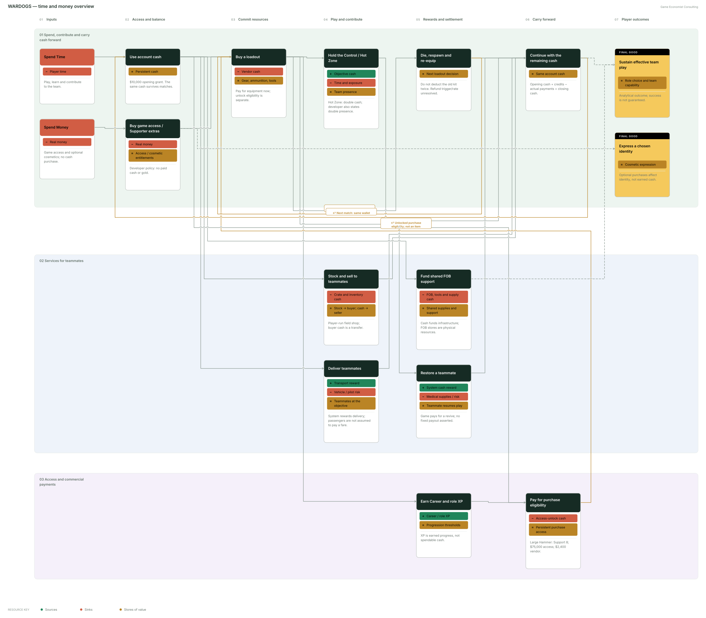

Public research · reviewed 14 September 2026 · older footage and unknown rules labeled
WARDOGS Economy Analysis
WARDOGS has a deliberately broad idea of a shooter economy. Cash is meant to make combat, rescue, transport, logistics and future progression part of the same player decision. That is more interesting than a score bonus attached to a kill, but it also makes the accounting boundary unusually important. A host, player, or analyst needs to know whether a price is a one-time access charge, a per-life purchase, a player-to-player payment, an automatic system reward, or a result-screen settlement. Those are different instruments with different incentives.
The public record supports a useful central ledger, but it does not support a complete formula for every moment of a life. In particular, it does not establish a 90% refund at death or at match end. Two fan explanations place that rate at incompatible events. Neither provides developer confirmation or a controlled before-and-after account balance. Rather than choose a plausible-sounding answer, this report leaves the rate, trigger and exclusions open.
The current-build anchor is important. Bulkhead’s Season 1 changelog is dated 9 September 2026; its Patch 0.11 notice was published 12 September for maintenance on 14 September at 08:00 UTC. Footage used below from 21 August is visibly labelled beta, build CL-491020. It can establish what a screen and a workflow looked like in that build, but it cannot establish launch prices or a current settlement formula.
Reading the Economy Flow
Start with Spend Time and Spend Money in the leftmost column, then follow the main flow to the right. Time leads into play and contribution. Real money buys game access and optional cosmetics; it does not buy account cash. The opening grant, persistent balance, equipment purchases and player transfers are downstream in-game mechanics. Labeled return pipes show repeat play and reinvestment, while the final column identifies player outcomes. The overview compresses related mechanics; the detailed map separates the individual actions and their evidence.

Start at the left with Spend Time and Spend Money. Real money buys access and optional cosmetics; the account cash balance is an in-game resource downstream. Follow normal pipes to the right. Labeled return pipes show repeat play or reinvestment. Transfers and unverified adjustments are explicitly labeled.The Central Cash Ledger
The best working model is a persistent account cash balance plus a set of match and life flows:
Closing cash = opening cash + system earnings + player receipts + verified refunds − vendor purchases (including consumables and supplies) − access-unlock payments − player payments − other verified cash adjustments.
That equation is a framework, not a claim that every term is presently observed. It prevents three recurring mistakes: treating XP as cash, treating a teammate’s payment as newly created money, and treating a displayed kit value as a cash debit.
Bulkhead’s official Steam description says the initial player journey begins with $10,000 cash and describes cash as persistent. The useful implication is that the opening grant is a starting stock, rather than a new match stipend, and that a match can affect later purchasing power. The pre-release developer FAQ independently described buying weapons, gear, utilities and vehicles, while its current store language identifies the same core loop. A loadout price is therefore a real cash sink; the exact handling of a dropped, used or surviving item remains a separate question.
| Ledger category |
Event supported by public evidence |
What changes |
What is still unmeasured |
| System source |
Objective work, kills, spotting, transport, revives, and the Hot Zone |
The developer describes these as cash-rewarded services; Hot Zone cash is doubled. |
Current values, stacking, eligibility and anti-farming limits. |
| System source |
End of match |
Patch 0.11 offers community servers a temporary 5% end-of-match cash bonus for the following week. |
Normal award calculation and whether it contains a kit return. |
| Vendor sink |
Weapons, gear, utilities, vehicles, ammunition and tools |
The buyer spends personal cash to obtain usable equipment or supplies. |
Separate treatment of ammo, magazines, attachments and vehicle inventory. |
| Player transfer |
Bribe for a revive; stock sold from a supply crate |
One player offers/pays cash and another may receive it; stock changes hands in a sale. |
Debit timing, fees, cancellation and successful-delivery condition. |
| Shared-infrastructure conversion |
Pallet unloaded to a friendly FOB |
Purchased physical supplies enter shared FOB inventory; older tutorial says driver and unloader earn cash. |
Current reward amounts and whether recipients or conditions changed. |
| Persistent access |
Role/level-gated unlock payment |
Cash buys eligibility to make later purchases, alongside an XP threshold. |
Whether all access fees are permanent and their current complete catalogue. |
The distinction between a source and a transfer matters for economy health. A revive reward paid by the game adds currency to the account economy. A downed player’s bribe, if paid, reallocates currency from the casualty to the medic. A crate sale moves cash from buyer to seller; it is not evidence that the game minted a sale reward. A pallet delivery can combine an up-front personal sink, a change to shared team capability, and a system reward. Reporting all three as “money made from logistics” would conceal the actual loop.
Patch 0.11 is valuable precisely because it identifies an unambiguous settlement event without identifying its full formula. It says community servers receive a temporary 5% “End of Match cash bonus”. The note also says cash exploits were fixed and says accounts abusing cash exploits can have cash and XP reset. That shows cash is a monitored persistent resource and that end-of-match cash exists. It does not show whether ordinary end-of-match cash contains a refund, which equipment is eligible, or what happens to a dead player’s kit.
Purchase, Death, Respawn and Match End
A player’s life begins with two separate gates. Unlocking grants future purchase eligibility; buying from a vendor puts a usable item into the current kit. The 9 September changelog gives an unusually clear example: the Large Hammer requires Support level 8, has a $75,000 Support access price, and its vendor price is $2,400. They can be combined to assess the first acquisition, but $77,400 must not be represented as the recurring loadout cost. The former is a persistent access investment; the latter is the per-use or per-life acquisition cost. The same changelog explicitly raises the Forward Operating Base vendor price to $7,500 and the Large Hammer vendor price to $2,400, a combined $9,900 before any separate access gates or supplies. Season 1’s official balance notes are the appropriate source for those current prices.
Death is designed to make that purchase decision meaningful. In Bulkhead’s “Early Access & Beyond” video at 1:37, the developer says that loadouts cost money, more equipment makes death hurt more, squads cannot spawn directly on each other, and returning to the fight involves travel. The official store page likewise presents recovery and risk as part of the loop. This establishes an economic and tactical consequence to dying. It does not disclose whether the consequence is a full loss, a partial refundable value, an end-of-round calculation, a time condition, or simply the need to buy a new kit.
The closest direct trace is intentionally limited. Riotmaker650’s 25 August upload records footage marked beta, 21 August, CL-491020. Around 4:54, the screen shows a kit labelled VALUE $7,753 and HUD counters of $20,710 and $217,878. The player is then downed, reaches RESPAWNING IN 2..., and reappears at base holding a rifle with counters -$12,213 and $180,865. The footage therefore demonstrates a practical loop—equipped life, death/give-up, base respawn and immediate re-entry with a weapon.
It does not demonstrate the ledger. The right-hand counter changes by $37,013 across a sequence that contains no itemised cart, death recap, transaction log or uninterrupted same-frame balance. The rifle after respawn might be free, retained, looted, a default issue, or a purchase made outside the captured evidence. It would be a category error to call that counter difference a death fee, a rebuy total, or a refund. It is better evidence than a generic guide for the existence of the lifecycle, but insufficient evidence for its settlement amount.
The same restraint applies at match end. The documented 5% temporary bonus proves there is an end-of-match award. It does not establish a normal refund rate, alive/dead eligibility, a 20-score-tick requirement, or special treatment for magazines and ammo. A public economy guide should phrase the current conclusion plainly: the timing and size of any equipment return are unresolved as of 14 September. That is more useful to hosts than a false number, because reward settings, server rules and player advice cannot safely be designed around an unverified formula.
Revive Economics: Reward, Bribe and Uncertainty
 BULKHEAD image in PC Gamer’s 11 September report. The screenshot shows the offer and interaction, not a completed payment. Image build not identified.
BULKHEAD image in PC Gamer’s 11 September report. The screenshot shows the offer and interaction, not a completed payment. Image build not identified.
Revive is the clearest example of why one action can contain two ledgers. The official FAQ lists reviving among the cash-rewarded team actions. That supports a system reward to the reviver; it does not provide a current amount. Separately, an 11 September PC Gamer firsthand report describes a downed player using F1 to attach an extra cash offer for a medic who prioritises them. Its observed examples are $200 and $500, and its screenshot shows a $100 marker alongside the revive interaction. This supports the existence and player-facing purpose of a bribe: it makes triage visible and lets a casualty compete for rescue.
The beta downed UI is consistent with that mechanism. In the Riotmaker650 recording, at 25:00, the direct frame reads TOTAL BRIBE $0 and BRIBE +$50. It shows the control increment in the August beta. It does not show a completed recipient payment, either party’s wallet before and after, or what happens if the casualty bleeds out, gives up, is revived by someone else, or cancels the offer.
The safe ledger is therefore: successful revive = possible system reward to reviver + possible player bribe transfer + medical-supply and risk cost. Each “possible” needs a current controlled observation before it becomes a numeric model. The bribe could be reserved immediately, debited on successful revival, returned on failure, partially taxed, or governed by another condition. The standard revive reward may stack with it, but the public evidence does not prove that stacking. A host investigating disputes should capture both players’ account balances through a fixed bribe under three paths: success, bleed-out and give-up. That test is much more informative than a single screenshot of the offer UI.
The design strength is real even without a confirmed number. A casualty has a reason to value a medic’s time, while the medic’s opportunity cost is acknowledged rather than hidden. The risks are equally clear: high-balance players may receive priority, medics may be accused of pay-to-prioritise behaviour, and unclear cancellation rules invite disputes. The system should present the offered amount, the payer, the recipient, a success/failure state and the final debit or credit in an accessible transaction log. Without that, players are asked to trust a consequential transfer they cannot audit.
Field Shops and FOB Supply Chains
 Inspected beta UI, 21 August 2026, CL-491020. Nova Gaming, 1:05. Historical $400 prices are not launch prices.
Inspected beta UI, 21 August 2026, CL-491020. Nova Gaming, 1:05. Historical $400 prices are not launch prices.
Supply crates and pallets both involve logistics, but they are different economic objects. Treating them as one “resupply income” loop obscures who owns the stock, who receives the benefit, and whether cash is transferred or created.
The inspected Nova Gaming footage at 00:55 is beta footage dated 21 August, CL-491020, uploaded 23 August. Its in-game tutorial says a player buys a supply crate with no refunds, buys stock into it, sets a markup before leaving the safe zone, deploys the crate, and allows teammates to buy goods. The small crate is visibly $150; a second crate shows UNLOCK $5,000. That $5,000 is an access cost for the additional crate, not proof that every crate costs $5,000. The shop loop is: seller cash buys container and stock; buyer cash pays seller; stock moves from seller-controlled inventory to buyer. A screen at 01:18 shows 3/24 slots, adjustable markup and “potential profit,” which supports price-setting but does not show a completed sale or a current fee.
Pallets are different. At 01:05, the same beta tutorial shows four pallet types at $400 and says the purchase has no refund. A pallet enters a logistics vehicle slot, is deployed near a friendly FOB, and can be unloaded by anyone into FOB inventory. The tutorial says those shared supplies are used to build, rearm and repair, and that both driver and unloader earn cash. This is a three-part conversion: personal cash becomes physical supplies; supplies become shared base capability; the game may reward completion. It is not a seller-buyer trade, even though several players participate.
The narration around this footage offers delivery rates, but contradicts itself about which participant receives a payment. This analysis retains only what the visible tutorial proves—driver and unloader receive cash in the beta—and excludes the proposed amounts. The same boundary applies to the four $400 pallet price tags: useful historical UI evidence, not a September launch price commitment.
FOBs compound the distinction between cash and access. The current Season 1 changelog raises the FOB vendor price to $7,500 and the Large Hammer vendor price to $2,400. It also changes the Large Hammer’s Support unlock price to $75,000 and moves its level gate to 8. Building capacity therefore requires more than a player having $9,900 once: someone must already have, or obtain, the role progression and access entitlement, buy the current-use tools, then deliver shared supplies. The beta FOB demonstration supports the separation of FOB supply inventory and construction, but it is not current reward evidence.
Season 1 already shows the developer monitoring a potential exploit boundary. It reduces XP for a supply-crate item sold under $75 from 25 XP to 1 XP and says the low-value supply-crate purchase curve was rescaled so it could not be abused. That is an XP intervention, not proof that the cash transfer itself is removed. It is nonetheless a useful signal for hosts: simple reciprocal trading can create progression incentives even where the net cash position of the group is unchanged. Telemetry should distinguish genuine frontline consumption from circular low-value sale activity.
Progression, Monetization and the Announced Metagame
Cash is not the only progression axis. The developer FAQ describes six progression tracks; Season 1’s changelog makes the division concrete by moving Artillery to Career level 90 and Heavy Tank to Driver level 35, while also changing cash prices. XP earns threshold access; cash pays for an unlock or for a vendor item once access exists. They should appear as separate columns in any economy dashboard.
The 9 September balance update explicitly slows levels 10–20 and says players seeking big-ticket items will need to grind, while flattening the curve from level 35. It also says seasonal XP curves and item order can change. That offers a clear operational warning: a static progression spreadsheet will go stale quickly. Hosts should record build/date with every rate and gate rather than cite a beta video or launch chart as timeless.
Real-money monetization is another boundary. Bulkhead’s 11 August purchase-policy announcement describes paid game access and optional Supporter cosmetic extras, and says cash and gold are not sold. This is a developer policy statement, not evidence of every storefront implementation after launch, but it supports a cautious current description: public evidence does not show direct purchase of in-game cash or gold.
The planned meta should be kept out of the live ledger. In the 7 April “Early Access & Beyond” roadmap, Bulkhead discussed a Black Market, Vault, businesses, cash-to-gold conversion and cycle/reset ideas. Those are announced design directions. No public source reviewed here establishes a live conversion rate, reset calendar, production yield, or the relationship between an account’s cash and future gold. They may become material sinks, persistence rules or inter-player markets; today they are scenario inputs, not observed cash sources.
Strengths, Risks and Remaining Measurements
The economy’s strongest feature is that it rewards useful interdependence. Combat contribution, rescue, mobility and construction can all matter to personal purchasing power while also helping the team. Crate markups let players make local provisioning choices; pallets make shared infrastructure a coordination problem; a revive offer prices a real battlefield trade-off. The persistent account makes those choices carry beyond a single round, which can create stories and specialised roles.
The same design has predictable risks. A poorly explained death settlement makes players perceive arbitrary punishment. Large gaps between established and new players can turn a skill-and-coordination advantage into a durable capital advantage. A player-run shop can support resupply but can also overcharge a desperate team. Bribe triage can encourage fast rescue but needs transparent failure handling. Low-value trade XP has already required adjustment. Exploit fixes and the explicit reset policy in Patch 0.11 show that the integrity of the shared economy is a live operational concern.
For hosts and analysts, the next work is measurement rather than speculation:
- Purchase test: record one account balance immediately before and after a named kit cart, separating weapon, ammo, magazine, attachment, utility and vehicle entries.
- Death test: hold rewards constant, capture account balance and life/profit indicators before death, after give-up, and on base respawn. Repeat with a successful revive instead of respawn.
- Bribe test: use a fixed offer and capture both players’ balances for successful revive, bleed-out and give-up. Record whether the system revive reward is additional to the transfer.
- Match-end test: compare alive, downed and respawned players, with a just-bought kit and a used kit, through the full result screen. Test quit/disconnect separately.
- Logistics test: capture buyer, seller and system balances across one crate sale; then driver and unloader balances across a pallet-to-FOB delivery. Confirm whether cash, XP and shared supplies are separately reported.
- Integrity monitoring: log server/build, role level, unlock ownership, transaction type and location. Flag abnormal repeated low-value trades, unusual revive pairs and delivery loops, but distinguish legitimate organised logistics from abuse.
This is a researched mechanics map, not a calibrated balance simulator. Exact costs of death and recovery should not be simulated until those tests yield itemised before/after results. The supported conclusion is: WARDOGS clearly uses persistent cash to join individual combat risk to team services and shared infrastructure; its exact death, bribe and ordinary end-match settlements remain unresolved in the public evidence.